Je viens de résoudre l'un des plus grands problèmes de Claudebot. Chaque fois que je lui confie une tâche, je n'ai aucune idée de ce qu'il est train de faire. Est-ce que ça fonctionne ? A-t-il terminé ? Et où est passé ce fichier ? J'ai donc construit un centre de commande qui me montre tout ce qu'il fait en un seul endroit. Il m'affiche mes tâches, les livrables qu'il m'a fournis, ce qu'il est en train d'exécuter en ce moment, et tout cela, je peux le faire fonctionner depuis mon téléphone.
Interface & Outils : Interface de tableau de bord / diagramme de flux et application mobile conceptuelle.
Contenu textuel & Code : Menus interactifs de suivi (« Tasks », « Deliverables », « Running Now ») et diagrammes de processus.
Action / Démonstration : Présentation conceptuelle du centre de commande et illustration du suivi des tâches automatisées.
Dans cette vidéo, je vais vous montrer exactement comment j'ai construit ceci sans absolument aucun codage nécessaire. Laissez-moi donc vous montrer exactement ce que je veux dire, et je vais vous montrer comment le faire vous-même. Très bien, je vais donc vous montrer rapidement comment cela fonctionne en ce moment en utilisant CloudBot sur mon téléphone via Telegram, ce qui est la façon dont je souhaite réellement interagir avec mon assistant CloudBot, et c'est super simple à utiliser. Donc cette vidéo ne va pas montrer comment vous pourriez configurer CloudBot ou tout le reste.
Interface & Outils : Navigateur web affichant le tableau de bord "Clawd Dashboard" sur localhost.
Contenu textuel & Code : Tableaux de suivi de tâches, listes de tâches actives ("Active Tasks", "Completed Today"), files d'attente ("Queue", "In Progress", "Waiting", "Done Today") et sections de livrables ("Deliverables").
Action / Démonstration : Présentation et explication du tableau de bord d'automatisation et de gestion de tâches sans code.
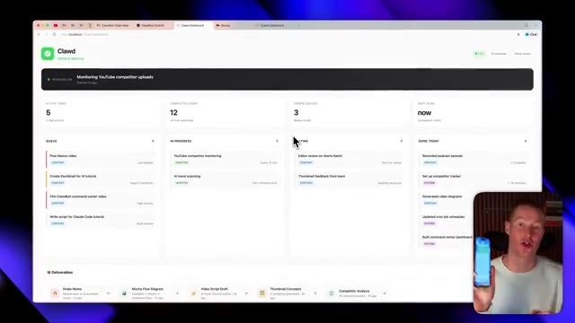
🔍 AgrandirJe vais plutôt simplement vous montrer ce centre de commande que j'ai construit et comment vous pouvez le construire et l'utiliser sur votre téléphone. Tout d'abord, ce que je vais faire, c'est simplement envoyer un message vocal à CloudBot et il sera capable de le transcrire. Et puis à partir de là, d'exécuter des tâches pour moi sur mon Mac mini. Hé, Claude, donc je veux que tu ajoutes quelque chose à ma liste de tâches. Je dois créer la vignette Manus pour ma prochaine vidéo YouTube. Donc, s'ajoute ça. Donc essentiellement, j'ai littéralement just envoyé ce message vocal et il va maintenant recevoir ce message vocal, l'écouter, puis l'ajouter réellement à mon tableau de bord que j'ai créé sur localhost. Très bien. Donc juste comme ça, vous pouvez voir dans notre file d'attente maintenant nous avons cette nouvelle tâche, créer la vignette Manus. Et ça
Interface & Outils : Navigateur web affichant l'interface du tableau de bord Clawd Dashboard.
Contenu textuel & Code : Métriques de suivi des tâches (Active tasks : 5, Completed today : 12, Videos queued : 3) organisées en colonnes kanban (Queue, In progress, Waiting, Done today) avec des vignettes de livrables en bas.
Action / Démonstration : Présentation de l'interface du centre de commande par le créateur.
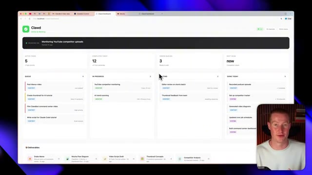
🔍 Agrandiressentiellement parce que Claude mettra à jour ce tableau de bord avec toutes ces informations. Mais encore une fois, c'est un serveur local et je ne peux pas vraiment y accéder sur mon téléphone, ni même sur mon ordinateur portable ou ma tablette, alors que je veux vraiment pouvoir l'emporter partout et utiliser mon assistant IA. Je vais donc vous montrer très rapidement comment nous pouvons maintenant le transformer en une application fonctionnelle, puis la publier afin de pouvoir l'utiliser sur nos différents appareils.
Interface & Outils : Navigateur web affichant un tableau de bord local hébergé sur "http://localhost:3000/dashboard".
Contenu textuel & Code : Métriques de productivité et de suivi de tâches (Active tasks: 5, Completed today: 12, Videos queued: 3), avec des colonnes de gestion de projet (Queue, In Progress, Waiting, Done Today) et un aperçu vidéo du présentateur en bas à droite.
Action / Démonstration : Le présentateur montre l'interface de son tableau de bord local piloté par Claude pour illustrer la gestion de ses tâches et workflows.
Alors tout d'abord, pour parler rapidement de la façon dont j'ai construit ceci avec CloudBot, puisque j'ai simplement dit sur Telegram, hé, je veux créer ce tableau de bord de centre de commande qui montre essentiellement toutes mes tâches en un seul endroit, ainsi qu'il montre absolument tout sur quoi tu travailles. Et ensuite, ajoute aussi ces livrables ici. Encore une fois, je pouvais voir ce mème de Drake ici. Donc n'importe quel actif qu'il génère pour moi, je pouvais le voir directement sur mon tableau de bord.
Interface & Outils : Navigateur web affichant une application locale sur 'localhost' nommée 'Clawd Dashboard'.
Contenu textuel & Code : Tableaux de bord de gestion de tâches ('Active tasks', 'Completed today', 'Video queues'), colonnes de suivi (Queue, In Progress, Waiting, Done Today) et mème explicatif.
Action / Démonstration : Présentation et explication visuelle du tableau de bord de centre de commande construit avec l'aide de CloudBot.
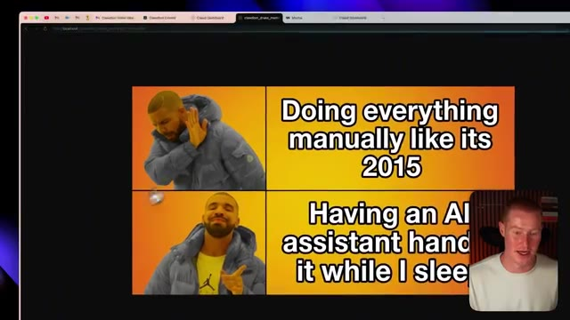
🔍 AgrandirMais ce que je veux faire maintenant, c'est simplement faire un clic droit sur cette interface ici, et je vais cliquer sur afficher le code source de la page. Et cela va me donner ce code HTML. Ne vous inquiétez pas, vous n'avez pas besoin de savoir coder. Je vais littéralement juste coller ou copier ce code ici. Et ensuite, ce que je vais faire, c'est que je vais aller sur getmocha.com. Je vais m'inscrire pour créer un compte si vous n'en avez pas déjà un.
Interface & Outils : Navigateur web affichant le tableau de bord local "Clawd Dashboard".
Contenu textuel & Code : Tableau de bord de gestion de tâches et de monitoring ("Active Tasks", "Completed Today", "Videos Queued"), menu contextuel de navigation web.
Action / Démonstration : Clic droit sur l'interface utilisateur web pour afficher le code source de la page.
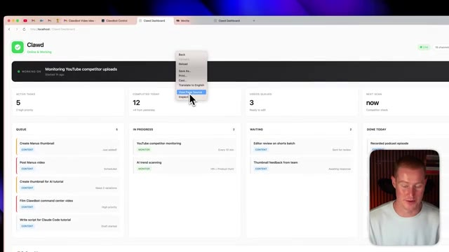
🔍 Agrandir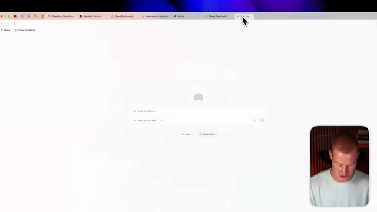
🔍 AgrandirSi vous n'en avez pas déjà un, il y a un lien dans la description pour le faire. Je vais cliquer sur ajouter une application. Et à partir de là, ce que je vais faire, c'est simplement coller ce code. Vous pouvez voir qu'il a collé ce markdown. Et ensuite, je vais juste dire, littéralement, je vais juste dire, construis ceci et clique sur envoyer. Et maintenant, Mocha va commencer à construire notre application. Quelques points clés que je tiens à mentionner ici. Donc, la raison pour laquelle nous utilisons Mocha, c'est non seulement pour que nous puissions publier ceci et commencer réellement à l'utiliser sur différents appareils, le partager avec nos amis, et cetera, mais cela possède également des bases de données intégrées.
Interface & Outils : Navigateur web affichant la plateforme de développement no-code Mocha (getmocha.com) avec le présentateur en incrustation vidéo en bas à droite.
Contenu textuel & Code : Champ de saisie contenant du texte markdown collé (« pasted_text...md »), options d'attachement, boutons « Inspiration », « Templates », et message « Working on it... Your app is being created ».
Action / Démonstration : Collage d'un contenu markdown dans l'outil no-code, validation de la création et affichage de l'écran de chargement de l'application en cours de génération par l'IA.
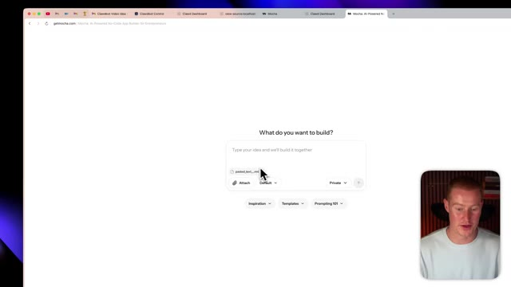
🔍 Agrandir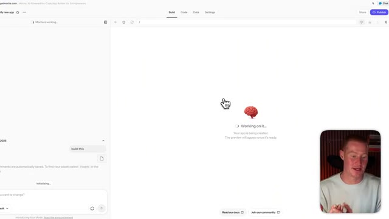
🔍 Agrandir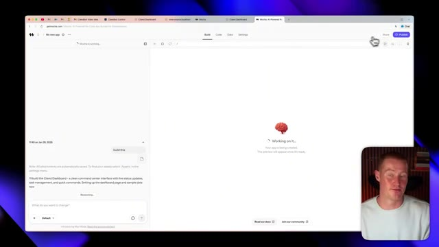
🔍 AgrandirDonc, afin de peupler réellement ce tableau de bord avec des informations réelles et à jour provenant de mon CloudBot avec lequel j'interagis tout au long de la journée, nous avons évidemment besoin d'avoir des informations réelles, en direct et à jour dans notre application. Donc, utiliser la base de données à l'intérieur de Mocha est la façon dont cela fonctionne réellement, car mon CloudBot va automatiquement pousser toutes les données que je lui donne à travers cette base de données. Vous n'avez pas besoin de savoir comment cela fonctionne. Ça fonctionne tout simplement pour vous. Et il y a quelques autres cas d'utilisation à l'intérieur de Mocha qui rendent cela vraiment utile au lieu d'avoir réellement à coder au feeling une application sur localhost en utilisant le CloudBot. Très bien, donc maintenant, juste environ 30 secondes plus tard, nous avons maintenant
Interface & Outils : Navigateur web affichant une application de type No-Code / générateur d'IA (Mocha).
Contenu textuel & Code : Texte de génération d'interface utilisateur en cours de traitement ("Working on it...", "I'll build the Clawd Dashboard...").
Action / Démonstration : Le créateur présente la génération automatique de l'interface utilisateur pour intégrer les données en direct du bot.
avons ce tableau de bord interactif ici qui fonctionne de manière très similaire à celui qui était sur localhost. Et nous pourrions aller de l'avant et effectivement apporter quelques modifications à cela avant de vouloir aller le publier sur notre site Web. Afin de commencer à apporter des modifications, je pourrais même venir ici, cliquer sur cette petite flèche ici, la flèche du curseur, et je pourrais modifier individuellement des parties de ce site Web. Donc si je veux juste changer le texte, je pourrais simplement changer, comme supprimer ceci ici, cliquer sur mettre à jour, et cela changera automatiquement cela juste là. Donc cela rend vraiment très facile de commencer à apporter des modifications à notre application au lieu de devoir faire cela à l'intérieur de Claudevot. Et nous pourrions même simplement venir ici et expliquer différentes choses que nous voulons changer. Très bien, donc je pense
Interface & Outils : Navigateur web affichant l'interface de création/gestion d'application "Clawd".
Contenu textuel & Code : Tableau de bord interactif affichant différentes métriques (tâches actives, complétées, file d'attente) et un panneau de chat latéral pour modifier le code.
Action / Démonstration : Présentation et explication du tableau de bord interactif et de sa structure de gestion de tâches.
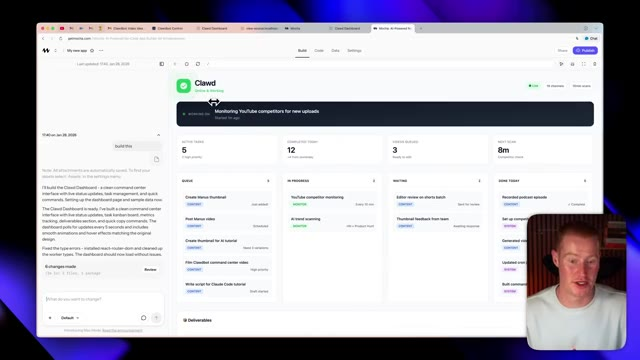
🔍 AgrandirÇa a l'air vraiment bien. Cependant, je veux que tu changes le truc de surveillance façon Claude en haut à gauche de notre site. Je veux que tu lui mettes un logo Claude sympa qui correspond un peu à l'ambiance de notre bot Claude. Aussi, je veux que notre site fasse plus futuriste, en accord avec cette ambiance qu'on recherche avec genre un agent IA qui fait des trucs pour nous. Très bien, voilà ce que ça a généré. C'est définitivement plus futuriste, ça a l'air un peu plus « vibe codé ». Donc je ne suis pas un très grand fan personnellement, mais vous pouvez voir qu'on a maintenant ce logo Claude là-haut. Du coup, je vais en fait revenir en arrière et rétablir l'autre interface juste parce que je trouve ça plus facile à regarder.
Interface & Outils : Navigateur web affichant l'outil de développement No-Code Mocha et un tableau de bord de gestion de tâches / agent IA.
Contenu textuel & Code : Panneau de chat latéral contenant des instructions textuelles de modification de design, listes de tâches actives, complétées, en attente ("Queue", "In Progress", "Waiting", "Done Today") et métriques du projet.
Action / Démonstration : Modification en temps réel de l'interface utilisateur du tableau de bord via le panneau de chat de l'assistant IA (changement de design vers un style plus futuriste et mise à jour du logo).
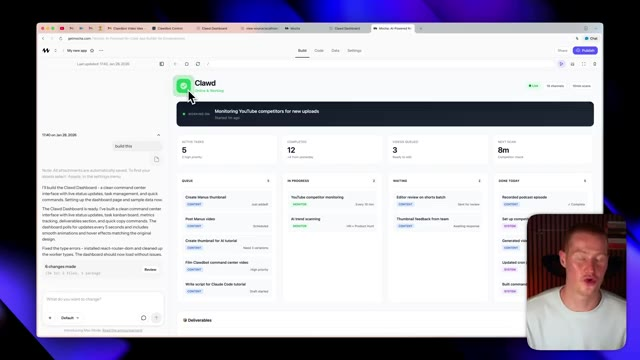
🔍 Agrandir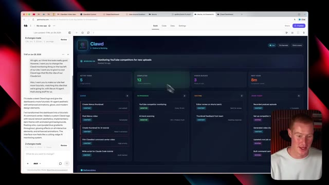
🔍 Agrandirà. Donc laissez-moi faire ça maintenant. Très bien, alors c'est parti, nous avons notre interface précédente et ensuite je tiens également à mentionner que j'ai effectivement configuré ma base de données. Donc maintenant, cela devrait fonctionner correctement. Alors ce que je vais faire, c'est que je vais tester mon bot Claude maintenant. Je vais maintenant envoyer un message sur Telegram en disant à mon bot Claude que j'ai effectivement quelques trucs à faire pour qu'il puisse l'ajouter à notre liste de tâches. Très bien, alors je viens d'envoyer le message sur mon téléphone à l'instant. Attendons quelques secondes et nous devrions voir cela s'afficher sur notre centre de commande. Et juste comme ça, j'ai en gros dit que je dois tourner la courte vidéo de Manish et envoyer les publications de la newsletter.
Interface & Outils : Navigateur web affichant l'interface de gestion de projet / tableau de bord 'Clawd' (getmocha.com).
Contenu textuel & Code : Métriques de productivité (Active Tasks: 5, Completed Today: 12, Videos Queued: 3, Next Scan: 9m) et colonnes de gestion de tâches (Queue, In Progress, Waiting, Done Today).
Action / Démonstration : Le présentateur commente l'interface utilisateur et présente le fonctionnement des tâches et de la base de données configurée.
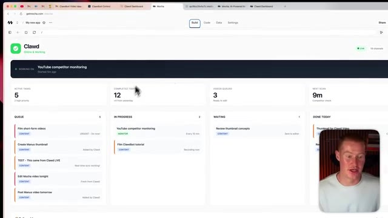
🔍 Agrandir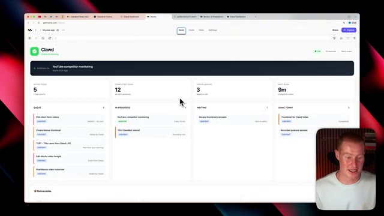
🔍 AgrandirEt j'ai dit que les deux étaient urgents. J'ai donc ajouté les deux. Et une autre chose que je tiens à mentionner, c'est que nous avons nos livrables ici. Donc, chaque fois que cela génère réellement quelque chose pour moi, disons que cela génère une image ou un mème, je peux en fait cliquer dessus et cela ouvrira ce mème directement sur mon écran. De cette façon, je n'ai pas besoin d'aller dans mes dossiers sur mon bureau pour voir réellement les résultats que cela me donne. Si vous avez utilisé Claudecode ou Claudebot, cela peut être assez pénible de devoir faire ça. Le fait d'avoir tout cela centralisé dans un seul tableau de bord a donc vraiment été un véritable্ভ salut. Très bien, maintenant que notre centre de commande fonctionne pour notre Claudebot, il ne me reste plus qu'à le partager pour pouvoir commencer à l'utiliser sur mon téléphone, ma tablette ou mon
Interface & Outils : Navigateur web affichant une application de tableau de bord de gestion de tâches.
Contenu textuel & Code : Tableau de bord avec statistiques (Active tasks: 5, Completed today: 12, Videos queued: 3, Next scan: 9m) et colonnes de tâches avec badges d'urgence.
Action / Démonstration : Présentation et navigation dans l'interface du tableau de bord de l'application Clawd.
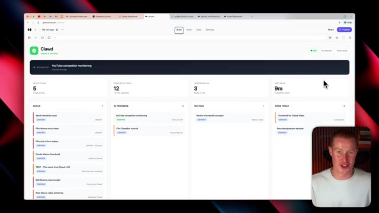
🔍 Agrandirautre ordinateur ou fondamentalement l'envoyer à un ami pour qu'il puisse l'utiliser aussi. Donc ce que je vais faire, c'est simplement cliquer sur ce bouton de publication violet. Je vais changer ceci pour publier, cliquer sur ce bouton de publier en bas, et ça va effectivement le faire pour moi maintenant. Et juste comme ça, j'ai maintenant cette URL personnalisée sur laquelle je peux accéder à mon site. Je vais l'ouvrir dès maintenant. Très bien. Donc juste comme ça, nous pouvons maintenant effectivement copier ce lien, le coller dans notre navigateur ou l'envoyer à un ami, et nous pouvons maintenant accéder à notre application directement via cette URL au lieu de passer par localhost. Très bien. Donc maintenant, une chose dont je veux parler, c'est si vous utilisez CloudBot, en lui donnant accès à quelque chose comme Zapier MCP,
Interface & Outils : Navigateur web affichant l'interface de la plateforme de développement d'applications Mocha (getmocha.com).
Contenu textuel & Code : URL de l'application générée, lien de partage et icônes de réseaux sociaux (X, LinkedIn, Facebook, Reddit).
Action / Démonstration : Partage de l'application et copie du lien dans le presse-papier pour permettre à d'autres utilisateurs de l'utiliser.
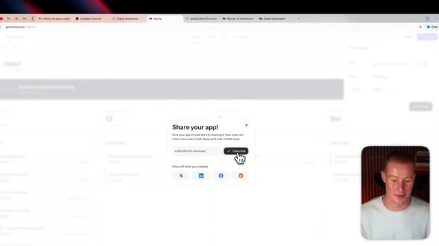
🔍 Agrandir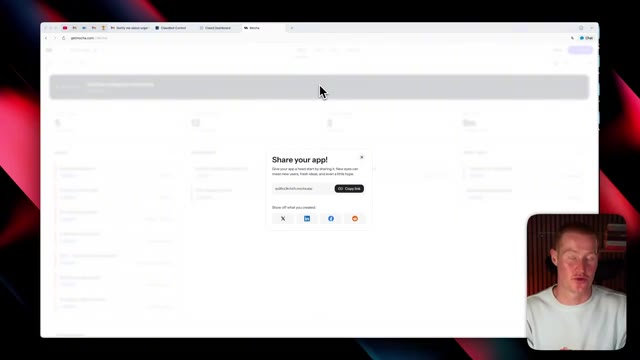
🔍 Agrandirce qui permet fondamentalement à votre agent d'aller effectuer différentes actions à travers les applications que vous utilisez est super puissant. Donc je vais vous montrer très rapidement comment vous pouvez faire cela maintenant et comment je le fais personnellement pour amplifier mon expérience CloudBot. Donc tout d'abord, pour faire cela, vous venez juste ici, vous cliquez sur le client MCP. Je vais cliquer sur Cloud Code ici, puis lui donner simplement un nom de serveur.
Interface & Outils : Navigateur Web affichant la plateforme Zapier MCP et son tableau de bord de configuration.
Contenu textuel & Code : Titres de pages promotionnels et interfaces de configuration d'outils d'automatisation (Slack, Notion, Manus MCP).
Action / Démonstration : Navigation et présentation de l'interface de connexion d'un agent IA à des applications via Zapier MCP.
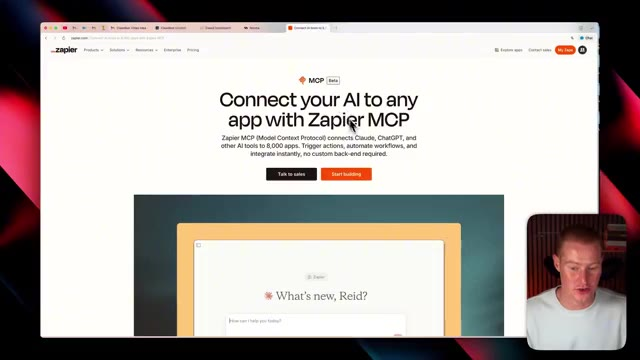
🔍 AgrandirDonc je vais juste appeler ça CloudBot et ensuite créer le serveur MCP. Et puis à partir d'ici, ce qu'on va faire, c'est qu'on pourrait littéralement connecter ceci à n'importe quelle application que nous utilisons. Donc par exemple, si j'utilise Airtable pour les bases de données ou Slack, disons que je veux envoyer un message à mon équipe sur Slack chaque fois que quelque chose est mis à jour dans Google Sheets, je peux simplement cliquer là-dessus, sélectionner ce bouton ici qui sélectionne tous ces outils.
Interface & Outils : Navigateur web affichant l'interface de Zapier MCP avec une fenêtre modale de sélection d'applications tierces (Gmail, Google Calendar, Google Sheets, Airtable, Slack, etc.).
Contenu textuel & Code : Liste d'applications populaires compatibles avec le serveur MCP : Gmail, Google Calendar, Google Sheets, Google Docs, Notion, Airtable, Slack, HubSpot, etc.
Action / Démonstration : Le présentateur navigue et sélectionne des applications dans la liste pour les connecter au serveur MCP.
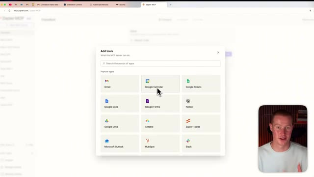
🔍 Agrandir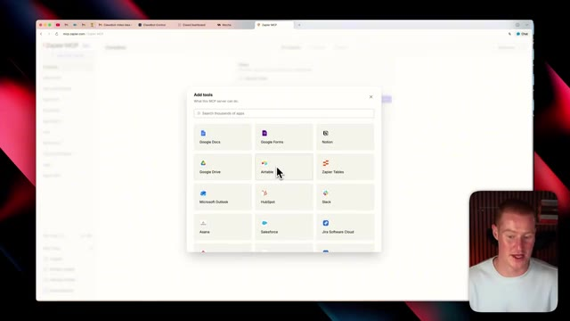
🔍 AgrandirEt maintenant nous avons accès à ces 34 actions à travers cette application et il suffit de cliquer sur connecter. Et maintenant ceci est ajouté à notre serveur MCP. Et c'est un moyen facile pour nous de configurer un serveur qui a la capacité d'aller et de réellement exécuter un tas d'actions différentes à travers toutes les applications que nous utilisons. Disons que nous ajoutons tout ce que nous voulons ajouter ici pour ce serveur spécifique.
Interface & Outils : Interface web Zapier MCP, navigateur web, vue incrustée du présentateur.
Contenu textuel & Code : Liste d'actions/outils disponibles pour Slack (Find message, Find user, etc.), statut de connexion au client Claude Code.
Action / Démonstration : Connexion et ajout d'actions d'une application (Slack) au serveur MCP pour permettre leur exécution automatique.
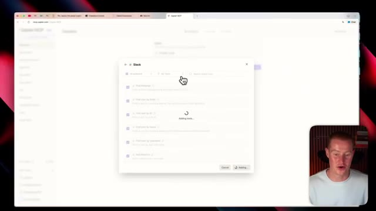
🔍 Agrandir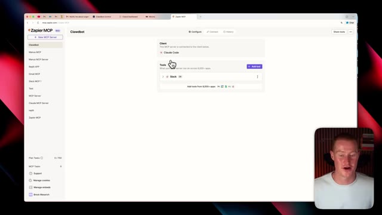
🔍 AgrandirJe peux cliquer sur ce bouton de connexion. Et ensuite, à partir d'ici, je vais simplement cliquer sur copier la commande. Et ensuite, je vais aller sur Cloud Code ou même donner ceci à mon Cloud Bot qui se trouve dans mon Telegram et simplement coller cette commande. Et il va aller de l'avant et réellement implémenter ceci dans notre flux de travail Argentic. Très bien, les gars, voilà. Nous avons construit tout ce tableau de bord de centre de commande Cloud Bot. Et nous pouvons désormais y accéder sur tous nos appareils parce que nous l'avons publié sur une URL publique.
Interface & Outils : Navigateur web affichant l'interface Zapier MCP / Clawdbot.
Contenu textuel & Code : Instructions de configuration et commande textuelle pour connecter Zapier MCP au terminal Claude Code.
Action / Démonstration : Copie de la commande de configuration depuis l'interface web pour l'utiliser dans le terminal ou l'assistant.
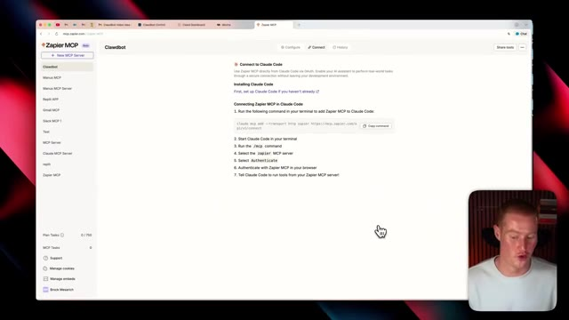
🔍 AgrandirDonc vous avez retiré de la valeur de cette vidéo. Assurez-vous de vous abonner à cette chaîne pour plus de contenu comme celui-ci. Dites-moi ce que vous en pensez dans les commentaires et je vous vois, les gars, dans la prochaine vidéo.
Interface & Outils : AUCUNE
Contenu textuel & Code : AUCUN
Action / Démonstration : AUCUNE